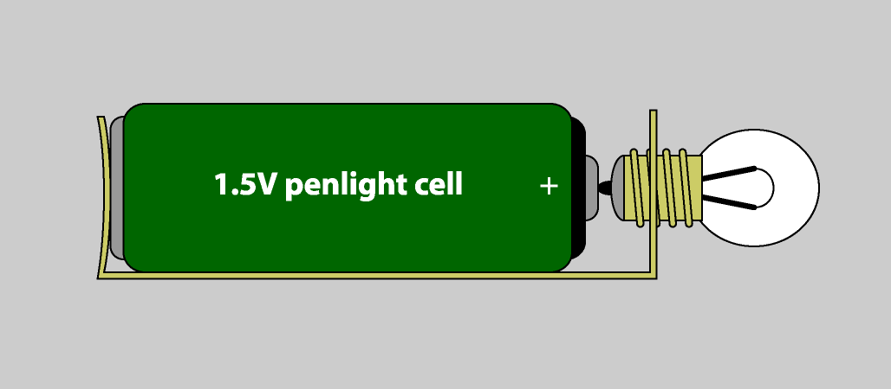

What You Should Know - Circuit Maze: Introduction to Circuits
 Important Vocabulary
Important Vocabulary
- Power Source - provides the energy needed for a circuit to work (a battery is a power source)
- Load - the part that uses the electricity in a circuit (a light is a load)
Resistor - part of a circuit that slows down the power of the current flowing through the circuit - Closed Circuit - closed path or loop where electricity can flow
- Pole - either of the charged ends (positive or negative) of a power source like a battery
- Mixed Number - a number that represents a number between two whole numbers (example 1 ¼)
All Circuits Work in the Same Way
All circuits work in the same basic way. Electricity flows from a power source (like a battery) along a path (a wire or another conductive material) to a load (an electrical device like a light), and then back in a loop.
All circuits have these three parts:
- Power source
- Load (resistor)
- Wiring path
A load is also called a resistor because it creates resistance between the two ends of the power supply. The resistor needs electricity to work, and as it does, it reduces the current flow. In this example, the resistor is a light. As the bulb uses some of the electricity to light up, it reduces the current.
A path does not have to be made of wires. It just needs to be made of a conductive material so there is a path between the power source and the resistor. Circuit Maze uses metal strips. Magnets are also conductive. Can you think of other conductive materials?

Closed Circuit
In order for electrical current to flow, the circuit must be closed. A closed circuit is a closed path (or loop) where electrical current can flow. If there is a break anywhere in the path, the electricity cannot flow and it is called an open circuit.
An electrical path can accidentally be broken, or you can use a switch to control the flow of electricity. When a switch is "on", it connects the two sides of the path, closing it and letting the current flow through. When it is "off", it "breaks" the connection; the path is open, and the current cannot flow through.
This is why an on-off switch is sometimes called a circuit breaker.
To light the beacons in Circuit Maze, you must create a closed circuit. The blue game tokens are the power supply. They connect to the other game tokens which have conductive metal strips. The metal strips allow electricity to flow through the colored beacons, lighting them up.
The Direction of Current Flow
Look at the example circuit above. Do you notice the arrows that show the direction of the electrical current? The direction is important because some electrical parts work differently—or not at all—depending on which way the current flows. The positive (+) and negative (-) sides of a power source, like the battery shown here, are called poles. Avoid Short Circuits
A short circuit happens when the electrical current flows straight from one end of the power supply to the other without passing through a resistor. Without a resistor, there is too much current flowing through the path. This can cause the batteries to overheat and can damage the game tokens.
A short circuit in a house can cause wires to heat up enough to cause a fire or explosion.
In each of these examples, electrical current flows from one side of the blue power supply to the other without passing through a beacon (resistor).
Career Connection and Real-World Application
Circuit Design Engineer
Circuit design engineers design and develop the circuits needed to build electronics like TVs, computers, and smartphones. They work on the latest circuit designs to keep improving the features and performance of your electronic devices. They also troubleshoot when your device is not working, using logic and problem-solving skills to figure out what is wrong.